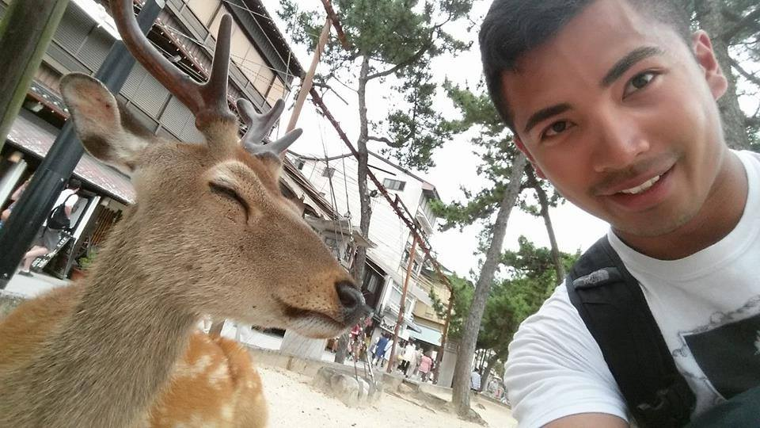

ei
ei
ei
Who you are
Photo
Bio
Profesional History
What you can do for a potential employer, what i have to offer
Programming
-Android, IosX, Django, Spring, Grails, Play Framework
Thurber Engineering
-Field and Laboratory Technician (2011-2014)
Discover E, girls coding club, Big Brother Big Sister
Licenses
Dangerous Goods Class 7
Concrete Testing Certificate
Security Services and Investigators Act License
Hobbies:
Traveling
Hiking
Boxing
Mixed Martial Arts
Fitness
https://www.linkedin.com/profile/view?id=348789977&trk=spm_pic